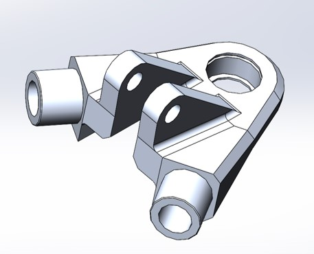
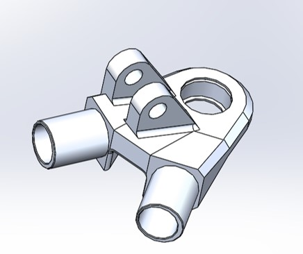
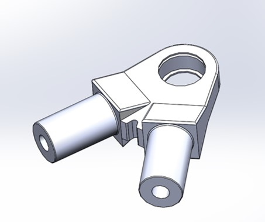
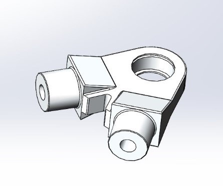
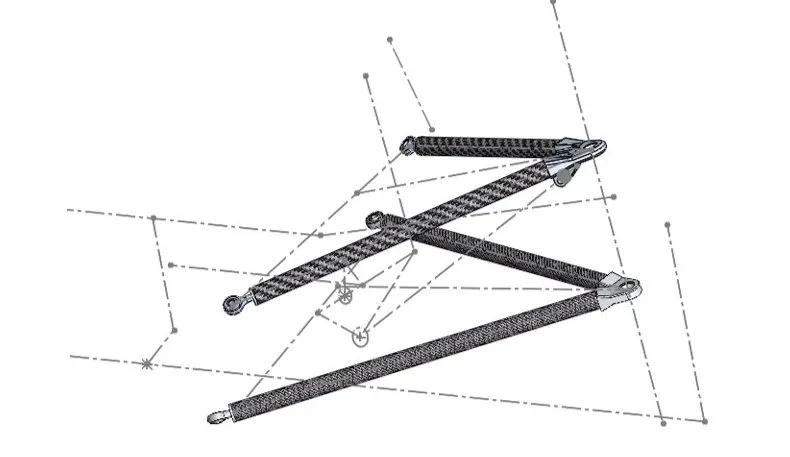

My team and I completed the composite aluminum/carbon fibre A-arm node redesign and optimization for the UVic Formula Racing Club's 2026 competition vehicle. The process combined analytical hand calculations, mesh convergence studies, topology optimization, and iterative FEA-guided material removal to minimize mass while maintaining structural integrity and utilizing design for manufacturing (DFM) principals.
This project involved interfacing with the current suspension geometry, and completing iterative FEAs and topology studies followed by material removal, all completed within SOLIDWORKS. All design objectives were met: total A-arm node mass reduced from 1,573g to 515g — a 67.3% reduction exceeding the 50% target. Front Upper and Rear Upper nodes used 7075-T6 aluminum for higher stress concentrations; Front and Rear Lower nodes used 6061-T6. All geometries are machinable on a 3-axis or 5-axis CNC mill.

Front upper node

Rear upper node

Front lower node

Rear lower node

Front suspension assembly